pacman::p_load(sf, tidyverse, tmap, MCI, readxl, knitr, ggrepel, patchwork, scales)
sf_use_s2(FALSE) # planar geometry, since all work is in SVY21
options(knitr.kable.NA = "")Take-home Exercise 3
How Many Riders Will the Jurong Region Line and Cross Island Line Draw, and From Which Stations?
Weekday morning rail tap-ins, 184 stations, August and September 2026 LTA DataMall, HDB, OneMap, data.gov.sg, URA pacman sf tidyverse tmap MCI readxl knitr ggrepel patchwork scales
Model fit
84%
of the variation in morning tap-ins between stations explained
New stations’ riders
102,100
tap-ins per weekday morning at the 29 new JRL and CRL stations
Busiest new station
7,950
Serangoon North, tap-ins per weekday morning
Stations losing over 15%
38
existing stations, mostly in the west, from Jurong to Bukit Panjang
Summary. This report estimates how many morning riders the 29 new Jurong Region Line and Cross Island Line stations will draw, and from which existing stations. A Huff model was calibrated on weekday morning tap-ins at Singapore’s 184 MRT and LRT stations, using where HDB flats are, how far they are from each station, and three station features. It explains 84% of the variation in tap-ins between stations, though single stations can be well off. With the new lines added, the 29 new stations draw about 102,100 tap-ins on a weekday morning, 14% of the island’s total. Serangoon North, Pasir Ris East and Tengah Plantation are the busiest. At the other end, between 7 and 12 new stations, depending on how Hume is measured, draw fewer riders from homes than Hume, a station that was kept closed for ten years for lack of riders. They are mostly in the Jurong industrial area, at NTU and near Changi, where the deciding riders will be workers and students, whom the model does not count. The riders come from nearby stations, not from across the island. 101 of 182 existing stations with predicted riders change by less than 5%, while 38 lose more than 15%, most of them in the west, from Jurong to Bukit Panjang, and the rest near the CRL. A bonus analysis with an exponential distance decay ranks the stations almost the same, so the ranking is more reliable than any single number.
The task is set out in the Take-home Exercise 3 brief. The Executive Summary is here.
Introduction
Singapore is building two new rail lines. The Jurong Region Line, JRL, will serve Choa Chu Kang, Tengah, Jurong West, NTU and the Jurong industrial area. According to LTA, 2026, its first stage is expected to open around mid-2028. Phase 1 of the Cross Island Line, CRL, will run from Aviation Park near Changi to Bright Hill, through Pasir Ris, Hougang and Ang Mo Kio, and is targeted for 2030.
Building a station is not the same as opening it. LTA sometimes builds a station’s shell ahead of time to avoid digging up the area later, then keeps it closed until enough people live nearby. Hume station was finished in 2015 but only opened in February 2025, and Buangkok and Woodleigh stayed closed when the North-East Line opened in 2003, because the expected number of riders could not justify the running costs. The same question applies to the new lines. Will each new station draw enough riders, and whose riders will they be?
New stations do two things. They draw riders who live close to them, and they take some riders away from the stations those people use today. This report estimates both with a probabilistic spatial interaction model, the Huff model taught in Lesson 8. The model is calibrated on how many people tap in at each existing station on a weekday morning. It is then run again with the new stations added, and each new station is compared with Hume, a station that was judged too quiet to open for ten years.
Research Question and Objectives
Research question. How many morning riders will the new JRL and CRL stations draw, and which existing stations will they draw them from?
The brief sets three objectives. They lead to four questions.
| Brief objective | Question | Part | Main method |
|---|---|---|---|
| Groundwork | Q1. Where do people live, and where do they board the train today? | Task 1 | Data wrangling, proportional symbol and dot maps |
| 1. Calibrate a probabilistic spatial interaction model | Q2. How strongly do distance and station features shape which station people use? | Task 2 | Huff model calibrated on observed tap-ins |
| 2. Predict ridership at the new stations | Q3. How many riders will each new station draw, and which may be too quiet to open? | Task 3 | Huff model with the new stations added, compared with Hume |
| 3. Impact on existing stations | Q4. Which existing stations lose riders, and how do their catchments change? | Task 3 | Change in predicted tap-ins and market areas |
| Bonus, an alternative model | Q5. Do the answers change if distance decay follows another curve? | Bonus | Exponential distance decay |
TipFive terms used throughout
- Origin. An HDB block. Its size is its number of flats.
- Destination. An MRT or LRT station where people tap in.
- Attractiveness. How appealing a station is apart from its distance, for example because it serves more lines or has more bus stops around it.
- Distance decay. How fast the pull of a station falls as it gets further away. A larger λ means people stick more to the nearest station.
- Catchment or market area. The blocks whose residents are most likely to use a station.
Task 1. Geospatial Data Science
Loading the Packages
p_load() from pacman loads the packages below and installs any that are missing. The workflow follows the course text, Kam, 2026b, and Hands-on Exercise 8.
| Package | Job in this report |
|---|---|
| sf | Reads the shapefiles, reprojects them, finds bus stops near each station and computes distances |
| tidyverse | Reading, joining and summarising the tables, and the charts |
| tmap | The maps |
| MCI | The Huff model functions huff.shares() and shares.total(), used to check the model code |
| readxl | Reads LTA’s station name table, which is an old Excel file |
| knitr | Tables |
| ggrepel, patchwork, scales | Chart labels that do not overlap, side-by-side charts and number formats |
shared colours
# warm means more riders, blue means fewer, and no chart pairs red with green (ISSS608 Lesson 2 colour guides)
col_high <- "#D55E00" # strong vermilion, gains and over-prediction
col_low <- "#0072B2" # strong blue, losses and under-prediction
col_ns <- "#EDE8DF" # pale grey-beige, background data
col_now <- "#7F7F7F" # grey, existing stations
line_cols <- c(JRL = "#0099AA", CRL = "#97C616") # LTA's own line colours, teal and lime
fmt <- function(x, d = 0) format(round(x, d), big.mark = ",", nsmall = max(d, 0), scientific = FALSE)
pct <- function(x, d = 0) paste0(round(100 * x, d), "%")
nocase <- function(x) paste0('<span style="text-transform:none">', x, "</span>") # keeps Greek letters lower case in table headers
and_list <- function(x) if (length(x) < 2) x else paste(paste(x[-length(x)], collapse = ", "), "and", x[length(x)])Data and Study Design
The data
| Dataset | Source | What it holds |
|---|---|---|
| Train Station, Sep 2026 | LTA DataMall, TrainStation_Sep2026.zip |
Station polygons, labelled with station codes |
| Train Station Codes and Chinese Names | LTA DataMall | Station code to station name |
| Passenger Volume by Origin Destination Train Stations, Aug and Sep 2026 | LTA DataMall API | Monthly trips between every pair of stations, by day type and hour |
| Future station coordinates | Elliot Wu, GitHub singapore_train_station_coordinates |
Points for stations not yet open, from URA plans |
| HDB Existing Building | data.gov.sg | Outlines of HDB blocks, with block number and postal code |
| HDB Property Information | data.gov.sg | Number of flats in every HDB block, with block number and street |
| OneMap Search API | Singapore Land Authority | Postal code and coordinates for an address |
| Bus Stop Location, Sep 2026 | LTA DataMall | Bus stop points |
| Master Plan 2014 Subzone Boundary | data.gov.sg | Background map of Singapore |
The brief also lists OpenStreetMap points of interest. They are not used, because the model looks at trips that start from home in the morning, and shops or offices near a station do not make people board there. HDB Property Information is added because the brief’s HDB building layer has no count of flats.
Study design
| Element | Choice | Why |
|---|---|---|
| Study area | Singapore, all 184 MRT and LRT stations with ridership | Every station competes with its neighbours, so none can be left out |
| Trips | Weekday tap-ins from 6am to 9am | In the morning most trips start from home, which is what the HDB origins stand for |
| Months | August and September 2026, averaged | The newest months. July is left out because Circle Line stations changed codes in July |
| Unit of ridership | Average tap-ins per weekday | Monthly totals are divided by the number of weekdays, 20 in August after the National Day holiday and 22 in September |
| Origins | HDB blocks, sized by number of flats | About three quarters of residents live in HDB flats. Private housing has no comparable open data |
| Distance | Straight line between block and station, in km | Walking routes are not available for future stations |
| CRS | SVY21 / Singapore TM, EPSG 3414 | Singapore’s national grid, in metres |
Data Preparation and Quality Assessment
The table lists the land mines found in these files, in the order the steps below handle them.
| # | Land mine | Why it matters | What was done |
|---|---|---|---|
| 1 | The station layer has a projection file but no EPSG code | st_transform() and joins with other layers could fail or be wrong |
The CRS is set to EPSG 3414, which matches the coordinates |
| 2 | The station layer stores codes, not names, and interchanges are one label such as “EW24 / NS1” | A join on names finds nothing | Labels are split into single codes and matched code by code |
| 3 | Ridership codes for interchanges, such as “NS24/NE6/CC1”, do not match the layer’s labels | A plain join drops the busiest stations | A station matches if any of its codes is in the layer |
| 4 | Circle Line stations changed codes in July 2026, for example CE1/DT16 became CC34/DT16 | Months before and after would not line up | Only August and September 2026 are used |
| 5 | Stevens is reported under two codes, DT10 and TE11 | It would count as two stations at the same place | The two are added together |
| 6 | Keppel, Cantonment and Prince Edward Road opened in 2026 and are missing from LTA’s name table | Three stations would have no name | Their names are added by hand |
| 7 | The HDB building layer has no number of flats, and the flats table has no coordinates and no shared key | The two cannot be joined | OneMap search turns each block’s address into a postal code, which both can use |
| 8 | Some new blocks, for example in Tengah, are not yet in the building layer | They would be lost | Their OneMap coordinates are used instead |
| 9 | The future station file lists every line still to open, and 7 JRL and CRL stations are at existing interchanges | Counting them as new stations would double count | Only the 36 JRL and CRL codes are kept, and the 7 interchanges get one more line instead |
The zipped LTA files are unzipped once into data/unzipped. The summary at the top of this page reads data/rds/results.rds, which is saved at the end of the report, so on a fresh copy the report is rendered twice.
unzip the LTA files
unz_dir <- "data/unzipped"
for (z in list.files("data/rawdata", pattern = "\\.zip$", recursive = TRUE, full.names = TRUE)) {
out <- file.path(unz_dir, tools::file_path_sans_ext(basename(z)))
if (!dir.exists(out)) unzip(z, exdir = out)
}Reading the stations, land mines 1 to 3
st_read() reads the station polygons. The projection file describes SVY21 but has no EPSG code, so st_set_crs() sets it to 3414.
read the station layer
stn_raw <- st_read(list.files(unz_dir, "RapidTransitSystemStation.shp$", recursive = TRUE, full.names = TRUE),
quiet = TRUE)
st_crs(stn_raw)$epsg[1] NAstn_raw <- stn_raw %>% st_set_crs(3414) %>% st_make_valid()
tibble(polygons = nrow(stn_raw), labels = n_distinct(stn_raw$STN_NAM),
interchange_labels = sum(str_detect(stn_raw$STN_NAM, "/")),
example = paste(head(unique(stn_raw$STN_NAM[str_detect(stn_raw$STN_NAM, "/")]), 3), collapse = ", ")) %>%
kable(col.names = c("Polygons", "Distinct labels", "Interchange labels", "Examples"))| Polygons | Distinct labels | Interchange labels | Examples |
|---|---|---|---|
| 234 | 225 | 4 | DT16 / CE1, EW14 / NS26, EW13 / NS25 |
The layer has more polygons than stations, because a station can be drawn as several pieces. Each label is split into single codes with str_split(), so that “EW24 / NS1” becomes two rows.
one row per station code
stn_long <- stn_raw %>%
mutate(code = str_split(STN_NAM, "/")) %>%
unnest(code) %>%
mutate(code = str_trim(code)) %>%
select(code)Reading the ridership, land mines 4 and 5
The brief points to LTA’s origin-destination passenger volumes. Adding up the trips that start at each station gives its tap-ins. read_csv() reads the file inside each zip.
weekday morning tap-ins from the origin-destination files
months <- c("202608", "202609")
weekdays <- c("202608" = 20, "202609" = 22) # weekdays less public holidays, which LTA counts as holidays
od <- map_dfr(months, ~ read_csv(list.files(file.path(unz_dir, paste0("PV_ODTrain_", .x)), full.names = TRUE),
show_col_types = FALSE) %>% mutate(month = .x))
am <- od %>%
filter(DAY_TYPE == "WEEKDAY", TIME_PER_HOUR %in% 6:8) %>%
mutate(PT_CODE = if_else(ORIGIN_PT_CODE %in% c("DT10", "TE11"), "DT10/TE11", ORIGIN_PT_CODE)) %>%
group_by(PT_CODE, month) %>%
summarise(trips = sum(TOTAL_TRIPS), .groups = "drop") %>%
mutate(per_day = trips / weekdays[month]) %>%
group_by(PT_CODE) %>%
summarise(n_month = n(), tap_in = mean(per_day))
tibble(stations = nrow(am), in_both_months = sum(am$n_month == 2),
total = fmt(sum(am$tap_in)), busiest = am$PT_CODE[which.max(am$tap_in)]) %>%
kable(col.names = c("Stations", "In both months", "Tap-ins per weekday morning", "Busiest"))| Stations | In both months | Tap-ins per weekday morning | Busiest |
|---|---|---|---|
| 184 | 184 | 717,047 | NS13 |
TIME_PER_HOUR 6 to 8 covers 6:00 to 8:59. Stevens appears as DT10 and TE11, so the two are added together. Every station appears in both months.
As a check, the same totals were compared with LTA’s passenger volume by station file. Most stations agree to within 1%, and the island totals differ by less than 1%, so the origin-destination file gives the right tap-ins.
check against the passenger volume by station file
pv <- map_dfr(months, ~ read_csv(list.files(file.path(unz_dir, paste0("PV_Train_", .x)), full.names = TRUE),
show_col_types = FALSE)) %>%
filter(DAY_TYPE == "WEEKDAY", TIME_PER_HOUR %in% 6:8) %>%
mutate(PT_CODE = if_else(PT_CODE %in% c("DT10", "TE11"), "DT10/TE11", PT_CODE)) %>%
group_by(PT_CODE) %>% summarise(pv = sum(TOTAL_TAP_IN_VOLUME))
od_tot <- od %>% filter(DAY_TYPE == "WEEKDAY", TIME_PER_HOUR %in% 6:8) %>%
mutate(PT_CODE = if_else(ORIGIN_PT_CODE %in% c("DT10", "TE11"), "DT10/TE11", ORIGIN_PT_CODE)) %>%
group_by(PT_CODE) %>% summarise(od = sum(TOTAL_TRIPS))
ratio <- inner_join(od_tot, pv, by = "PT_CODE") %>% mutate(r = od / pv)
c(stations = nrow(ratio), within_1pct = sum(abs(ratio$r - 1) < 0.01), overall = round(sum(ratio$od) / sum(ratio$pv), 3)) stations within_1pct overall
184.000 153.000 0.995 Building the destination table, land mines 3 and 6
Each ridership code such as “NS24/NE6/CC1” is split into its parts. A station is matched to every polygon that carries any of its parts, and summarise() merges those polygons into one shape. st_centroid() then gives one point per station. LTA’s name table gives the names, and the three new Circle Line stations are named by hand.
match ridership codes to the station layer
key <- am %>% select(PT_CODE) %>% mutate(code = str_split(PT_CODE, "/")) %>% unnest(code)
line_of <- function(code) case_when(
str_detect(code, "^BP") ~ "BPLRT", str_detect(code, "^(SE|SW|STC)") ~ "SKLRT",
str_detect(code, "^(PE|PW|PTC)") ~ "PGLRT", str_detect(code, "^CE") ~ "CC",
TRUE ~ str_extract(code, "^[A-Z]+"))
names_tbl <- read_excel(list.files(unz_dir, "Codes.*xls$", recursive = TRUE, full.names = TRUE)) %>%
select(code = stn_code, name = mrt_station_english) %>%
bind_rows(tibble(code = c("CC30", "CC31", "CC32"), name = c("Keppel", "Cantonment", "Prince Edward Road")))
stn_info <- key %>%
mutate(line = line_of(code)) %>%
left_join(names_tbl, by = "code") %>%
group_by(PT_CODE) %>%
summarise(name = first(na.omit(name)), lines = n_distinct(line), lrt = all(str_detect(line, "LRT")))
stations <- stn_long %>%
inner_join(key, by = "code", relationship = "many-to-many") %>%
group_by(PT_CODE) %>% summarise() %>%
st_centroid() %>%
left_join(stn_info, by = "PT_CODE") %>%
left_join(am %>% select(PT_CODE, tap_in), by = "PT_CODE")
tibble(ridership_codes = nrow(am), matched = nrow(stations), missing_name = sum(is.na(stations$name)),
mrt = sum(!stations$lrt), lrt = sum(stations$lrt)) %>%
kable(col.names = c("Ridership codes", "Matched to the layer", "Without a name", "MRT", "LRT"))| Ridership codes | Matched to the layer | Without a name | MRT | LRT |
|---|---|---|---|---|
| 184 | 184 | 0 | 146 | 38 |
Every station with ridership is matched to the layer and has a name.
Adding attractiveness, bus stops within 400 m
Lesson 8 describes attractiveness as what makes a destination appealing apart from its distance. Studies that apply the Huff model to stations build it from the station’s service and the transport around it, such as Zhu et al., 2021, for rail stations and Lin et al., 2016, for park and ride stations. Three measures are used here, and all three can also be measured for stations that do not exist yet.
| Measure | Why it adds pull | Source |
|---|---|---|
| Number of lines at the station | An interchange takes riders to more places without a transfer | Station codes |
| Bus stops within 400 m | Feeder buses bring riders from further away. 400 m is about a five-minute walk | LTA bus stops |
| LRT station or not | LRT stations are small feeders. Many of their riders live within walking distance of them only because the LRT was built there | Station codes |
st_is_within_distance() finds the bus stops within 400 m of each station and lengths() counts them. The bus stop layer has the same CRS problem as the stations.
bus stops within 400 m of each station
bus <- st_read(list.files(unz_dir, "BusStop.shp$", recursive = TRUE, full.names = TRUE), quiet = TRUE) %>%
st_set_crs(3414)
stations$bus400 <- lengths(st_is_within_distance(stations, bus, dist = 400))
summary(stations$bus400) Min. 1st Qu. Median Mean 3rd Qu. Max.
1.000 6.000 9.000 9.337 12.000 20.000 The future stations, land mine 9
The future station file lists every station still to open. filter() keeps the 24 JRL and 12 CRL stations named in the brief. JS2A Forest Hill is not in the file, because LTA only added it in 2026, for the mid-2030s.
keep the JRL and CRL stations
fut <- read_csv("data/rawdata/future/future_stations.csv", show_col_types = FALSE) %>%
filter(str_detect(station_code, "^(JS([1-9]|1[0-2])|JE[1-7]|JW[1-5]|CR([2-9]|1[0-3]))$")) %>%
mutate(line = if_else(str_detect(station_code, "^CR"), "CRL", "JRL")) %>%
st_as_sf(coords = c("lon", "lat"), crs = 4326) %>%
st_transform(3414)
# the 7 new codes at existing interchanges, and the station they join
link <- c(JS1 = "NS4/BP1", JS8 = "EW27", JE5 = "EW24/NS1", CR5 = "EW1",
CR8 = "NE14", CR11 = "NS16", CR13 = "TE7")
fut$joins <- link[fut$station_code]
fut$gap_m <- NA_real_
i <- !is.na(fut$joins)
fut$gap_m[i] <- as.numeric(st_distance(fut[i, ], stations[match(fut$joins[i], stations$PT_CODE), ], by_element = TRUE))
fut %>% st_drop_geometry() %>% count(line) %>% kable(col.names = c("Line", "Stations"))| Line | Stations |
|---|---|
| CRL | 12 |
| JRL | 24 |
fut %>% st_drop_geometry() %>% filter(i) %>%
transmute(station_code, station_name, joins, gap_m = round(gap_m)) %>%
kable(col.names = c("New code", "Name", "Joins existing station", "Distance apart, m"))| New code | Name | Joins existing station | Distance apart, m |
|---|---|---|---|
| JS1 | Choa Chu Kang | NS4/BP1 | 7 |
| JS8 | Boon Lay | EW27 | 87 |
| JE5 | Jurong East | EW24/NS1 | 25 |
| CR5 | Pasir Ris | EW1 | 105 |
| CR8 | Hougang | NE14 | 67 |
| CR11 | Ang Mo Kio | NS16 | 77 |
| CR13 | Bright Hill | TE7 | 171 |
All 7 interchange points are within 171 m of the existing station, close enough to share one catchment. These stations keep their existing point and gain one line. The other 29 stations are new points, each with one line and the bus stops around it today.
the destination tables, before and after
dest_now <- stations %>% select(PT_CODE, name, lines, bus400, lrt, tap_in)
dest_new <- fut %>% filter(is.na(joins)) %>%
transmute(PT_CODE = station_code, name = station_name, line, lines = 1L, lrt = FALSE, tap_in = NA_real_)
dest_new$bus400 <- lengths(st_is_within_distance(dest_new, bus, dist = 400))
dest_fut <- dest_now %>%
mutate(line = if_else(PT_CODE %in% link, if_else(PT_CODE %in% link[c("CR5", "CR8", "CR11", "CR13")], "CRL", "JRL"), "Existing"),
lines = lines + (PT_CODE %in% link)) %>%
bind_rows(dest_new)
c(now = nrow(dest_now), future = nrow(dest_fut), new_points = nrow(dest_new)) now future new_points
184 213 29 The origins, land mines 7 and 8
The HDB Property Information table has the number of flats in each block but no coordinates. The HDB Existing Building layer has the block outlines and postal codes, but no flats. Street names in the table are shortened, for example “BEDOK NTH ST 4”, so there is no clean key between the two.
OneMap’s search returns the postal code and coordinates of an address. Each residential block is searched by its block number and street. A result is accepted only if its block number matches. If its postal code is in the building layer, the block’s outline is used. If not, the block is newer than the layer and OneMap’s point is used.
The search takes over an hour for about 10,800 blocks, so the results are saved in data/onemap/hdb_onemap.csv and the search only runs when that file is missing.
find each block's postal code with OneMap
hdb_info <- read_csv("data/rawdata/hdb/HDBPropertyInformation.csv", show_col_types = FALSE,
col_types = cols(blk_no = "c")) %>%
filter(residential == "Y")
hdb_bld <- st_read("data/rawdata/hdb/HDBExistingBuilding.geojson", quiet = TRUE) %>% st_transform(3414)
onemap_search <- function(blk, street) {
url <- paste0("https://www.onemap.gov.sg/api/common/elastic/search?searchVal=",
URLencode(paste(blk, street), reserved = TRUE),
"&returnGeom=Y&getAddrDetails=Y&pageNum=1")
res <- tryCatch(jsonlite::fromJSON(url)$results, error = function(e) NULL)
Sys.sleep(0.25) # stay well under OneMap's rate limit
none <- tibble(postal = NA_character_, x = NA_real_, y = NA_real_, status = "no_match")
if (is.null(res) || length(res) == 0) return(none)
res <- as_tibble(res) %>% filter(BLK_NO == blk) # the block number must match
hit <- filter(res, POSTAL %in% hdb_bld$POSTAL_COD)
status <- if (nrow(hit) > 0) "blk_postal" else "blk_only"
if (nrow(hit) == 0) hit <- res
if (nrow(hit) == 0) return(none)
tibble(postal = hit$POSTAL[1], x = as.numeric(hit$X[1]), y = as.numeric(hit$Y[1]), status = status)
}
geo_file <- "data/onemap/hdb_onemap.csv"
if (!file.exists(geo_file)) {
dir.create("data/onemap", showWarnings = FALSE)
hdb_info %>% distinct(blk_no, street) %>%
mutate(out = map2(blk_no, street, onemap_search)) %>%
unnest(out) %>%
write_csv(geo_file)
}
geo <- read_csv(geo_file, show_col_types = FALSE, col_types = cols(blk_no = "c", postal = "c"))
geo %>% count(status) %>% kable(col.names = c("OneMap result", "Blocks"))| OneMap result | Blocks |
|---|---|
| blk_only | 61 |
| blk_postal | 10756 |
blk_postal means the block was found and its postal code is in the building layer. blk_only means it was found but is newer than the layer.
The building layer can draw one block as several pieces, so summarise() merges them by postal code before st_centroid() takes the centre.
the origin table
bld_pts <- hdb_bld %>% group_by(POSTAL_COD) %>% summarise() %>% st_centroid()
origins <- hdb_info %>%
select(blk_no, street, town = bldg_contract_town, year_completed, flats = total_dwelling_units) %>%
left_join(geo %>% select(blk_no, street, postal, x, y, status), by = c("blk_no", "street")) %>%
left_join(bld_pts %>% mutate(bx = st_coordinates(.)[, 1], by = st_coordinates(.)[, 2]) %>% st_drop_geometry(),
by = c("postal" = "POSTAL_COD")) %>%
mutate(x = if_else(status == "blk_postal", bx, x), y = if_else(status == "blk_postal", by, y)) %>%
filter(!is.na(x), flats > 0) %>%
mutate(origin_id = paste(blk_no, street)) %>%
select(origin_id, town, year_completed, flats, status, x, y) %>%
st_as_sf(coords = c("x", "y"), crs = 3414)
tibble(blocks = nrow(hdb_info), placed = nrow(origins),
flats = fmt(sum(hdb_info$total_dwelling_units)), flats_placed = fmt(sum(origins$flats)),
share = pct(sum(origins$flats) / sum(hdb_info$total_dwelling_units), 1)) %>%
kable(col.names = c("Residential blocks", "Placed on the map", "Flats", "Flats placed", "Share of flats placed"))| Residential blocks | Placed on the map | Flats | Flats placed | Share of flats placed |
|---|---|---|---|---|
| 10817 | 10817 | 1,179,156 | 1,179,156 | 100% |
The maps use the 2014 Master Plan subzones, merged into planning areas, as a pale background.
background map, and save the prepared data
dir.create("data/rds", showWarnings = FALSE)
sg <- st_read("data/rawdata/boundary/MP14_SUBZONE_WEB_PL.shp", quiet = TRUE) %>% st_transform(3414) %>% st_make_valid()
sg_pa <- sg %>% group_by(PLN_AREA_N) %>% summarise()
write_rds(list(origins = origins, dest_now = dest_now, dest_fut = dest_fut, fut = fut, sg_pa = sg_pa),
"data/rds/prepared.rds")The spatial interaction tables
The brief asks for two spatial interaction tables, one for today’s stations and one with the new stations added. Each row is one block and one station, with the block’s flats, the station’s attractiveness and the distance between them. st_distance() gives the distances in metres, which are turned into km. A block that sits on top of a station would have a distance of almost zero, and d−λ would explode, so distances are given a floor of 100 m.
distance matrices and the two interaction tables
dist_km <- function(o, d) {
D <- units::drop_units(st_distance(o, d)) / 1000
D[D < 0.1] <- 0.1
dimnames(D) <- list(o$origin_id, d$PT_CODE)
D
}
D_now <- dist_km(origins, dest_now)
D_fut <- dist_km(origins, dest_fut)
si_table <- function(D, dest) {
as_tibble(D, rownames = "origin_id") %>%
pivot_longer(-origin_id, names_to = "PT_CODE", values_to = "dist_km") %>%
left_join(st_drop_geometry(origins) %>% select(origin_id, flats), by = "origin_id") %>%
left_join(st_drop_geometry(dest) %>% select(PT_CODE, lines, bus400, lrt), by = "PT_CODE")
}
si_now <- si_table(D_now, dest_now)
si_fut <- si_table(D_fut, dest_fut)
c(rows_now = nrow(si_now), rows_future = nrow(si_fut)) rows_now rows_future
1990328 2304021 head(si_now) %>% kable(digits = 2)| origin_id | PT_CODE | dist_km | flats | lines | bus400 | lrt |
|---|---|---|---|---|---|---|
| 1 BEACH RD | BP10 | 13.73 | 142 | 1 | 9 | TRUE |
| 1 BEACH RD | BP11 | 14.06 | 142 | 1 | 9 | TRUE |
| 1 BEACH RD | BP12 | 14.43 | 142 | 1 | 15 | TRUE |
| 1 BEACH RD | BP13 | 14.34 | 142 | 1 | 16 | TRUE |
| 1 BEACH RD | BP2 | 15.74 | 142 | 1 | 15 | TRUE |
| 1 BEACH RD | BP3 | 15.29 | 142 | 1 | 12 | TRUE |
Where People Live and Where They Board Today
shared map layers
base_map <- tm_shape(sg_pa) + tm_polygons(fill = "#F7F4EE", col = "grey80", lwd = 0.4)
tmap_options(scale = 1.1, component.autoscale = FALSE)Where the flats are
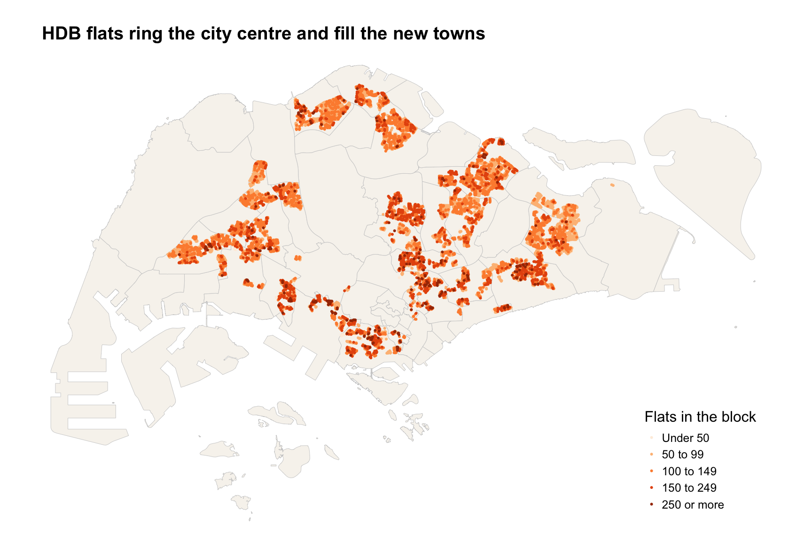
base_map +
tm_shape(arrange(origins, flats)) +
tm_dots(fill = "flats", size = 0.12,
fill.scale = tm_scale_intervals(style = "fixed", breaks = c(0, 50, 100, 150, 250, 1000),
labels = c("Under 50", "50 to 99", "100 to 149", "150 to 249", "250 or more"),
values = "brewer.oranges"),
fill.legend = tm_legend(title = "Flats in the block", position = tm_pos_in("right", "bottom"), frame = FALSE)) +
tm_layout(frame = FALSE) +
tm_title("HDB flats ring the city centre and fill the new towns", size = 1.1, fontface = "bold")Flats sit in a ring of towns around the centre, with large empty areas in the west, the middle and the far east. The 10,817 blocks hold 1,179,156 flats. The towns with the most flats are Tampines, Jurong West and Woodlands. The darkest dots, blocks of 250 flats or more, are found in most towns, but most often on the city fringe, in Kallang/Whampoa, Queenstown and Bukit Merah. There are no flats in Tuas, the Western Catchment, the central nature reserve or around Changi Airport. Tengah, the newest town, lies between Choa Chu Kang and Jurong West, right on the JRL. It has 145 blocks with 16,318 flats so far, and more are being built, so the JRL predictions there will grow over time.
Where people board today
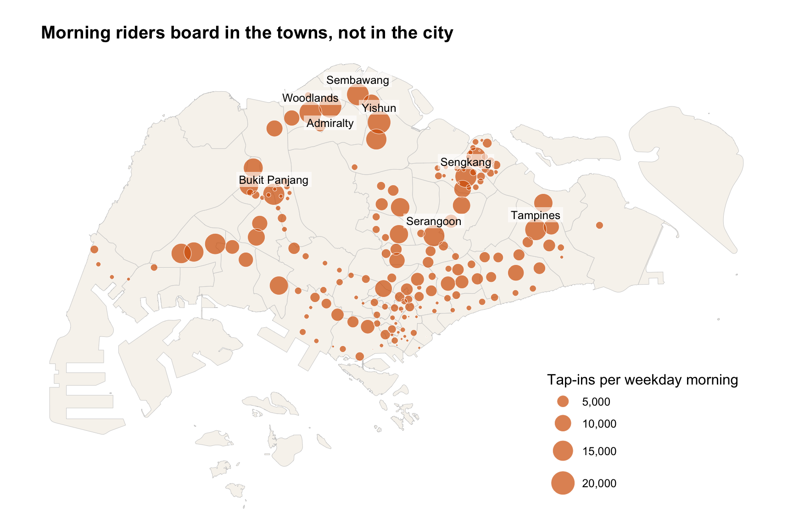
top_now <- dest_now %>% slice_max(tap_in, n = 8)
base_map +
tm_shape(arrange(dest_now, desc(tap_in))) +
tm_bubbles(size = "tap_in", fill = col_high, fill_alpha = 0.7, col = "white", lwd = 0.4,
size.scale = tm_scale_continuous(values.scale = 1.6),
size.legend = tm_legend(title = "Tap-ins per weekday morning", position = tm_pos_in("right", "bottom"),
frame = FALSE)) +
tm_shape(filter(top_now, name != "Admiralty")) + tm_text("name", size = 0.7, ymod = 1.1, bgcol = "white", bgcol_alpha = 0.6) +
tm_shape(filter(top_now, name == "Admiralty")) + tm_text("name", size = 0.7, ymod = -1.2, bgcol = "white", bgcol_alpha = 0.6) +
tm_layout(frame = FALSE) +
tm_title("Morning riders board in the towns, not in the city", size = 1.1, fontface = "bold")Morning tap-ins are highest at stations in the big HDB towns. The busiest station is Yishun, with 19,148 tap-ins on an average weekday morning, followed by Admiralty, Woodlands and Sembawang. All four are in the big northern towns, far from the city, where many residents ride the train to work. Stations in the city centre are small circles, because in the morning people tap out there rather than in. This is why HDB blocks are a fair stand-in for where morning trips start. LRT stations in Bukit Panjang, Sengkang and Punggol are also small, because each serves only the few blocks around it. A rider who changes from the LRT to the MRT taps in only once, at the LRT station.
Task 2. Calibrating the Huff Model
Short answer
The full model fits best, with an R² of 0.84. The distance decay λ is 2.05, so a station twice as far has 24% of the pull. More lines and more bus stops add pull, and LRT stations have much less. Each block only considers stations within 5 km. The model fits the big stations well but misses stations whose riders are not HDB residents, such as those near private housing or workplaces.
Step 1. The model
The Huff model, first set out by Huff in 1963, says that the chance a resident of block i boards at station j is that station’s pull divided by the pull of all stations. The pull rises with attractiveness and falls with distance, as in Lesson 8. The same idea has been used to decide which stores to close, Bahrami et al., 2022, to draw hospital service areas, Bai et al., 2023, and to find which station people use, Zhu et al., 2021, and Lin et al., 2016.
\[U_{ij} = A_j \, d_{ij}^{-\lambda} \qquad P_{ij} = \frac{U_{ij}}{\sum_k U_{ik}}\]
Attractiveness combines the three measures, each with its own weight. Writing it this way is the multiplicative competitive interaction form of Nakanishi and Cooper, 1974, which Lesson 8 also covers.
\[A_j = L_j^{\,\alpha_1} \times (B_j + 1)^{\alpha_2} \times e^{\alpha_3 R_j}\]
Lj is the number of lines, Bj the number of bus stops within 400 m, and Rj is 1 for an LRT station. One is added to the bus stops so that a station with none does not get zero pull.
Each block sends its flats to the stations by these chances. The expected riders of station j are the sum over all blocks, and its expected share is that sum divided by all flats.
\[E_j = \sum_i P_{ij} \, C_i \qquad \hat{s}_j = \frac{E_j}{\sum_k E_k}\]
Step 2. Writing the model as matrices
Hands-on Exercise 8 used huff.shares() from MCI, which works on the long interaction table. Fitting needs the model to be run hundreds of times, so the same formulas are written with matrices, one row per block and one column per station.
the Huff model as matrices
attract <- function(par, dest) {
exp(par["a_lines"] * log(dest$lines) + par["a_bus"] * log(dest$bus400 + 1) + par["a_lrt"] * dest$lrt)
}
decay <- function(D, lambda, form = "pow") if (form == "pow") D^(-lambda) else exp(-lambda * D)
huff_prob <- function(par, D, dest, form = "pow", max_km = Inf) {
F <- decay(D, par["lambda"], form)
if (is.finite(max_km)) {
keep <- D <= max_km
keep[cbind(seq_len(nrow(D)), max.col(-D))] <- TRUE # the nearest station always stays in
F[!keep] <- 0
}
U <- sweep(F, 2, attract(par, dest), "*")
U / rowSums(U)
}
huff_share <- function(par, D, dest, form = "pow", max_km = Inf) {
E <- colSums(huff_prob(par, D, dest, form, max_km) * origins$flats)
E / sum(E)
}max_km is explained in Step 3. With max_km = Inf the functions are the plain Huff model.
Before using these functions, they are checked against MCI. huff.shares() slows down sharply as the table grows, so the check uses 150 blocks picked at random, with all stations. With λ = 2 and every weight at 1, the chance of each block using each station should be the same from both.
check the matrix code against MCI
par0 <- c(lambda = 2, a_lines = 1, a_bus = 1, a_lrt = 1)
set.seed(626)
chk_ids <- sample(origins$origin_id, 150)
mci_in <- si_now %>%
filter(origin_id %in% chk_ids) %>%
mutate(A = exp(log(lines) + log(bus400 + 1) + lrt)) %>%
as.data.frame()
mci_p <- huff.shares(mci_in, "origin_id", "PT_CODE", "A", "dist_km", gamma = 1, lambda = -2)
my_p <- huff_prob(par0, D_now, dest_now)
mine <- my_p[cbind(match(mci_p$origin_id, rownames(my_p)), match(mci_p$PT_CODE, colnames(my_p)))]
chk_diff <- max(abs(mci_p$p_ij - mine))
chk_diff[1] 0The largest difference over 27,600 block and station pairs is 0, so the two give identical results and the matrix code matches the package.
Step 3. Fitting the weights to the observed tap-ins
Lesson 8 also shows how to fit the MCI model with mci.fit(), which turns it into a linear regression. That needs the observed share of every block at every station. These shares do not exist, because LTA only reports trips from station to station, not from home to station. What is known is each station’s total tap-ins.
So the model is fitted the way Hands-on Exercise 8 fitted λ. That exercise tried λ values on a grid and kept the one whose expected shares were closest to the actual shares. Here there are four weights, so optim() searches them together, with the same target, the sum of squared differences between expected and observed shares. Two checks after the fit make sure the search found the best point, a λ grid like the one in Hands-on Exercise 8, and a restart from other starting values.
Observed shares are each station’s tap-ins divided by all tap-ins. Using shares on both sides means flats and tap-ins do not need to be in the same unit.
A limit on how far people go to board
The plain Huff model gives every block some chance of using every station on the island, even one 30 km away. With 184 stations, these small chances add up. Most riders of a quiet station would then come from far-off towns, and a new station in Jurong would take riders from Changi. That is not how people choose a station.
So each block only considers stations within 5 km, the distance a feeder bus covers in about 15 minutes. Zhu et al., 2021, made a similar change when they applied the Huff model to rail stations in Xi’an, widening the walking catchment to the area that cycling and feeder buses can reach, but not to the whole city. Its nearest station always stays in, even if it is further. The table below shows that 5 km keeps every realistic choice.
how far each block is from its nearest station
max_km <- 5
nearest_km <- apply(D_now, 1, min)
tibble(measure = c("Median", "90% of blocks within", "99% of blocks within", "Furthest block"),
km = c(quantile(nearest_km, c(0.5, 0.9, 0.99)), max(nearest_km))) %>%
kable(digits = 2, col.names = c("Distance from a block to its nearest station", "km"))| Distance from a block to its nearest station | km |
|---|---|
| Median | 0.55 |
| 90% of blocks within | 1.18 |
| 99% of blocks within | 1.88 |
| Furthest block | 3.51 |
Half the blocks have a station within about half a kilometre, and the furthest block is 3.5 km from its nearest station, so no block loses its realistic choices. A check in Task 3 shows what the limit changes.
Fitting
Two reference models come first, so the Huff model has something to beat. The first sends every block to its nearest station, with no choice at all. The second is a Huff model with distance only, where every station is equally attractive. Then three versions of attractiveness are fitted, from simple to full, to see how much each measure adds.
calibrate three versions of the model
obs_share <- dest_now$tap_in / sum(dest_now$tap_in)
calibrate <- function(free, form = "pow", max_km = 5, start_lambda = NULL, start_a = 0) {
start <- c(lambda = if (!is.null(start_lambda)) start_lambda else if (form == "pow") 2 else 1,
a_lines = start_a, a_bus = start_a, a_lrt = start_a)
sse <- function(p) {
par <- start; par[free] <- p
sum((huff_share(par, D_now, dest_now, form, max_km) - obs_share)^2)
}
fit <- optim(start[free], sse, method = "BFGS")
par <- start; par[free] <- fit$par
pred <- huff_share(par, D_now, dest_now, form, max_km)
list(par = par, sse = fit$value, converged = fit$convergence == 0,
r2 = cor(pred, obs_share)^2, pred = pred * sum(dest_now$tap_in))
}
# reference 1, every block uses its nearest station
near_share <- tapply(origins$flats, factor(dest_now$PT_CODE[max.col(-D_now)], levels = dest_now$PT_CODE), sum)
near_share[is.na(near_share)] <- 0
r2_nearest <- cor(as.numeric(near_share) / sum(near_share), obs_share)^2
fits <- list(
`Distance only` = calibrate("lambda"),
`Lines only` = calibrate(c("lambda", "a_lines")),
`Lines and bus stops` = calibrate(c("lambda", "a_lines", "a_bus")),
`Lines, bus stops and LRT` = calibrate(c("lambda", "a_lines", "a_bus", "a_lrt"))
)
bind_rows(tibble(model = "Nearest station only", r2 = r2_nearest, converged = NA),
imap_dfr(fits, ~ tibble(model = .y, lambda = .x$par["lambda"], a_lines = .x$par["a_lines"],
a_bus = .x$par["a_bus"], a_lrt = .x$par["a_lrt"],
r2 = .x$r2, converged = .x$converged))) %>%
select(model, lambda, a_lines, a_bus, a_lrt, r2, converged) %>%
kable(digits = 2, escape = FALSE, col.names = c("Model", nocase("λ"), nocase("α lines"), nocase("α bus stops"), nocase("α LRT"), "R²", "Converged"))| Model | λ | α lines | α bus stops | α LRT | R² | Converged |
|---|---|---|---|---|---|---|
| Nearest station only | 0.55 | |||||
| Distance only | 2.21 | 0.00 | 0.00 | 0.00 | 0.57 | TRUE |
| Lines only | 2.37 | 1.64 | 0.00 | 0.00 | 0.70 | TRUE |
| Lines and bus stops | 2.33 | 1.60 | 0.11 | 0.00 | 0.70 | TRUE |
| Lines, bus stops and LRT | 2.05 | 0.97 | 0.11 | -2.12 | 0.84 | TRUE |
The full model beats both references, and lines and the LRT flag add the most. R² here is the squared correlation between expected and observed station shares. Sending every block to its nearest station explains 55% of the variation in tap-ins between stations, and a Huff model with distance only explains 57%. So distance alone is not enough, and the gain comes from the station features. Adding lines gives 70%, bus stops change this very little, and the LRT flag lifts it to 84%, so lines and the LRT flag each add about 13 points. The full model is used from here on. All weights have the expected sign. More lines and more bus stops add pull, and an LRT station has 12% of the pull of an MRT station with the same lines and bus stops. Part of this low pull may come from the network rather than from preference, because many LRT residents take a feeder bus straight to the MRT hub. The fitted λ of 2.05 means that doubling the distance to a station cuts its pull to 24%.
Checking the fit
The first check holds the three attractiveness weights at their fitted values and tries λ from 1 to 3.5 in steps of 0.1, as in Hands-on Exercise 8. The second runs optim() again from two other starting points.
a λ grid and two restarts
lambda_grid <- tibble(lambda = seq(1, 3.5, by = 0.1)) %>%
mutate(sse = map_dbl(lambda, function(l) {
par <- bp; par["lambda"] <- l
sum((huff_share(par, D_now, dest_now, max_km = max_km) - obs_share)^2)
}))
restarts <- map_dfr(list(c(1, 0.5), c(3, -0.5)), function(s0) {
f <- calibrate(c("lambda", "a_lines", "a_bus", "a_lrt"), start_lambda = s0[1], start_a = s0[2])
tibble(start = paste0("λ ", s0[1], ", weights ", s0[2]), lambda = f$par["lambda"], a_lines = f$par["a_lines"],
a_bus = f$par["a_bus"], a_lrt = f$par["a_lrt"], r2 = f$r2)
})
bind_rows(tibble(start = "λ 2, weights 0, main fit", lambda = bp["lambda"], a_lines = bp["a_lines"],
a_bus = bp["a_bus"], a_lrt = bp["a_lrt"], r2 = best$r2), restarts) %>%
kable(digits = 3, escape = FALSE, col.names = c("Starting values", nocase("λ"), nocase("α lines"), nocase("α bus stops"), nocase("α LRT"), "R²"))| Starting values | λ | α lines | α bus stops | α LRT | R² |
|---|---|---|---|---|---|
| λ 2, weights 0, main fit | 2.051 | 0.965 | 0.109 | -2.124 | 0.835 |
| λ 1, weights 0.5 | 2.057 | 0.965 | 0.108 | -2.132 | 0.835 |
| λ 3, weights -0.5 | 2.055 | 0.967 | 0.108 | -2.129 | 0.835 |
ggplot(lambda_grid, aes(lambda, sse)) +
geom_line(colour = col_now) + geom_point(colour = col_high, size = 2) +
geom_vline(xintercept = bp["lambda"], linetype = "dashed", colour = "grey30") +
labs(title = "The grid and optim() agree on λ", x = "λ", y = "Sum of squared differences") +
theme_minimal(base_size = 12) + theme(plot.title = element_text(face = "bold"), panel.grid.minor = element_blank())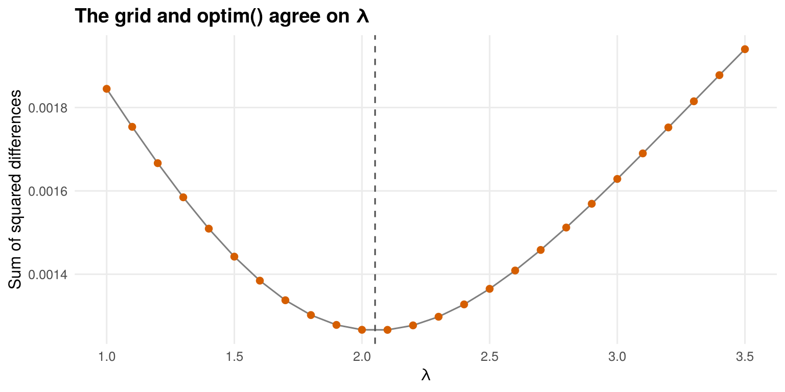
The search found the best point. The grid is lowest at λ = 2.1, next to the 2.05 that optim() found, and the curve rises on both sides, so there is one clear best value. Both restarts end at the same weights, so the answer does not depend on where the search began.
Step 4. How well the model fits
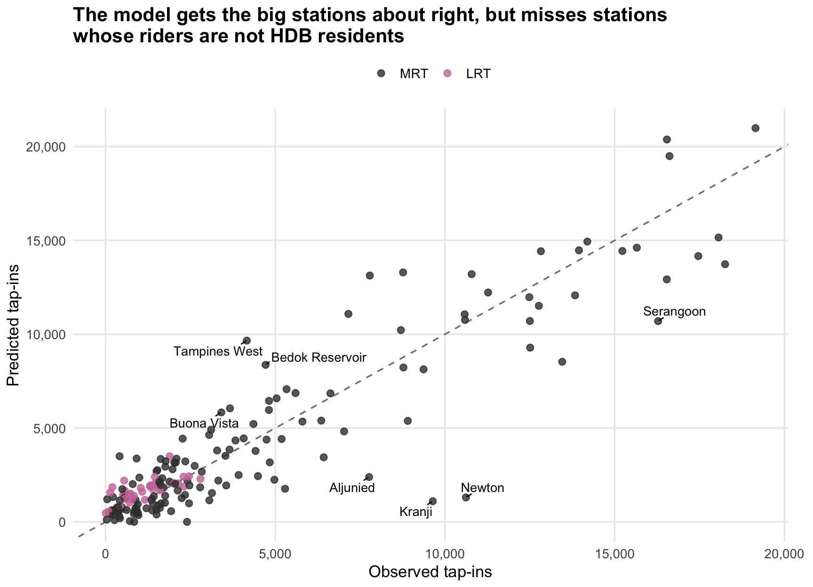
f3 <- fit_now %>% st_drop_geometry() %>% filter(tap_in > 3000)
over <- f3 %>% slice_max(ratio, n = 3)
under <- f3 %>% slice_min(ratio, n = 3)
lab_fit <- bind_rows(over, under, f3 %>% slice_max(abs(resid), n = 3)) %>% distinct(PT_CODE, .keep_all = TRUE)
ggplot(st_drop_geometry(fit_now), aes(tap_in, pred)) +
geom_abline(linetype = "dashed", colour = "grey50") +
geom_point(aes(colour = lrt), size = 2.2, alpha = 0.8) +
geom_text_repel(data = lab_fit, aes(label = name), size = 3.6, min.segment.length = 0, seed = 1) +
scale_colour_manual(values = c(`FALSE` = "#3B3B3B", `TRUE` = "#CC79A7"), labels = c("MRT", "LRT"), name = NULL) +
scale_x_continuous(labels = comma) + scale_y_continuous(labels = comma) +
labs(title = "The model gets the big stations about right, but misses stations\nwhose riders are not HDB residents",
x = "Observed tap-ins", y = "Predicted tap-ins") +
theme_minimal(base_size = 13) +
theme(plot.title = element_text(face = "bold"), panel.grid.minor = element_blank(), legend.position = "top",
plot.margin = margin(5.5, 20, 5.5, 5.5))The model gets the overall pattern right, but not every station. The R² of 0.84 comes mostly from the big stations, which sit close to the dashed line. LRT stations are shown in pink. Station by station the fit is rougher. Only 37% of stations are predicted within 30% of their observed tap-ins. Among stations with more than 3,000 tap-ins, the largest over-predictions are at Tampines West, Bedok Reservoir and Buona Vista. These sit between busier stations, and their residents tend to use the neighbouring station instead. The largest under-predictions are at Kranji, Newton and Aljunied. Kranji serves the industry and workers’ dormitories around Kranji and Sungei Kadut, Newton serves private housing, and Aljunied serves Geylang, where many people rent rooms in shophouses and private flats. None of these groups is in the model, whose only origins are HDB blocks. So the model is best read as a guide to where riders come from, not as an exact count for each station.
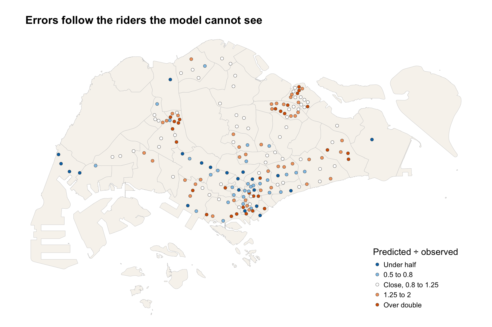
base_map +
tm_shape(mutate(fit_now, ratio_c = pmin(pmax(ratio, 0.25), 4))) +
tm_symbols(shape = 21, fill = "ratio_c", size = 0.35, col = "grey30", lwd = 0.4,
fill.scale = tm_scale_intervals(style = "fixed", breaks = c(0, 0.5, 0.8, 1.25, 2, Inf),
labels = c("Under half", "0.5 to 0.8", "Close, 0.8 to 1.25", "1.25 to 2", "Over double"),
values = c(col_low, "#8FC4E8", "#FFFFFF", "#F1A26B", col_high)),
fill.legend = tm_legend(title = "Predicted ÷ observed", position = tm_pos_in("right", "bottom"), frame = FALSE)) +
tm_layout(frame = FALSE) +
tm_title("Errors follow the riders the model cannot see", size = 1.1, fontface = "bold")The errors follow who the model leaves out. Blue stations, where the model is too low, fall into three groups. The first is the Bukit Timah and Novena corridor, with Beauty World, Sixth Avenue, Tan Kah Kee, Stevens, Newton and Novena, where many people live in private homes. The second is the Tuas stations, Kranji and Changi Airport, whose morning riders are mostly workers. Tuas West Road and Tuas Link get no riders, as no HDB block lies within 5 km. The third is city stations such as Bugis and Somerset. Warm stations, where the model is too high, include 26 of the 38 LRT stops in Punggol, Sengkang and Bukit Panjang, whose residents often take a bus straight to the MRT. So are MRT stations next to a busier neighbour, such as Expo and Cashew, and harbourfront stations used mostly as destinations, such as Keppel and Labrador Park. For the new lines this means the stations near private estates, such as Tavistock and Serangoon North on the CRL, may draw more than predicted, while Aviation Park and the Jurong industrial stations will mainly serve workers, whom the model does not count.
Task 3. Predicting Ridership at the New Stations
Short answer
The 29 new stations draw about 102,100 weekday morning tap-ins, 65,300 at the new JRL stations and 36,800 at the new CRL stations. Serangoon North is the busiest. Between 7 and 12 new stations draw fewer riders from homes than Hume. The riders come from existing stations nearby. 38 existing stations lose more than 15% of their morning riders, while 101 of 182 barely change.
Step 1. Running the model with the new stations
The calibrated weights are kept, and the model is run on the second interaction table, which has the 29 new stations and one more line at the 7 interchanges. The total number of morning riders is held at today’s level, so the model shows how today’s riders would spread out with the new lines. It does not add new riders who take the bus today.
predict with and without the new stations
total <- sum(dest_now$tap_in)
pred_now <- huff_share(bp, D_now, dest_now, max_km = max_km) * total
pred_fut <- huff_share(bp, D_fut, dest_fut, max_km = max_km) * total
result <- dest_fut %>%
mutate(pred_fut = pred_fut,
pred_now = pred_now[match(PT_CODE, dest_now$PT_CODE)],
change = pred_fut - pred_now,
change_pct = if_else(pred_now > 0, change / pred_now, 0)) # 2 Tuas stations have no HDB block within 5 km
result %>% st_drop_geometry() %>%
mutate(group = case_when(is.na(pred_now) ~ paste(line, "new stations"),
line != "Existing" ~ paste(line, "interchanges"),
TRUE ~ "Other existing stations")) %>%
group_by(group) %>%
summarise(stations = n(), riders = sum(pred_fut), change = sum(change, na.rm = TRUE)) %>%
arrange(match(group, c("JRL new stations", "CRL new stations", "JRL interchanges", "CRL interchanges"))) %>%
kable(digits = 0, format.args = list(big.mark = ","),
col.names = c("Group", "Stations", "Predicted tap-ins", "Change from today"))| Group | Stations | Predicted tap-ins | Change from today |
|---|---|---|---|
| JRL new stations | 21 | 65,307 | 0 |
| CRL new stations | 8 | 36,764 | 0 |
| JRL interchanges | 3 | 24,525 | -15,101 |
| CRL interchanges | 4 | 41,441 | 2,569 |
| Other existing stations | 177 | 549,010 | -89,539 |
The new stations have no change, because they have no riders today. The change column for the other groups is the sum of their gains and losses.
Checking the 5 km limit
Stations far from every new station should hardly change. The check below fits the same model with no limit, and with limits of 3 km and 8 km, and compares them on these far stations. It also shows how the main results move with the limit. The last column uses Hume as a yardstick, explained in Step 2.
the same prediction with other limits
new_pts <- filter(result, is.na(pred_now))
far <- apply(units::drop_units(st_distance(dest_now, new_pts)), 1, min) > 5000
is_new <- !dest_fut$PT_CODE %in% dest_now$PT_CODE
limit_check <- function(km) {
f <- if (km == 5) best else calibrate(c("lambda", "a_lines", "a_bus", "a_lrt"), max_km = km)
now <- huff_share(f$par, D_now, dest_now, max_km = km) * total
fut <- huff_share(f$par, D_fut, dest_fut, max_km = km) * total
chg <- fut[match(dest_now$PT_CODE, dest_fut$PT_CODE)] / now - 1 # NaN where a station has no riders today
tibble(limit = if (is.finite(km)) paste(km, "km") else "No limit", r2 = f$r2, lambda = f$par["lambda"],
far_median = median(chg[far], na.rm = TRUE), lose15 = sum(chg < -0.15, na.rm = TRUE),
new_riders = sum(fut[is_new]), below_hume = sum(fut[is_new] < now[dest_now$PT_CODE == "DT4"]))
}
limits <- map_dfr(c(Inf, 3, 5, 8), limit_check)
limits %>%
mutate(r2 = round(r2, 3), lambda = round(lambda, 2), far_median = percent(far_median, 0.1),
new_riders = fmt(new_riders, -2)) %>%
kable(escape = FALSE, col.names = c("Limit", "R² today", nocase("λ"), paste0("Median change at the ", sum(far), " stations over 5 km from any new station"),
"Stations losing over 15%", "Riders at new stations", "New stations below Hume"))| Limit | R² today | λ | Median change at the 87 stations over 5 km from any new station | Stations losing over 15% | Riders at new stations | New stations below Hume |
|---|---|---|---|---|---|---|
| No limit | 0.849 | 2.40 | -8.1% | 54 | 101,500 | 12 |
| 3 km | 0.819 | 1.87 | 0.0% | 35 | 101,900 | 9 |
| 5 km | 0.835 | 2.05 | -0.4% | 38 | 102,100 | 12 |
| 8 km | 0.843 | 2.18 | -3.4% | 42 | 101,900 | 12 |
Without a limit, stations across the island lose riders to lines they are nowhere near. The plain model fits today’s tap-ins slightly better, but it predicts that stations more than 5 km from any new station lose 8.1% of their riders, as a median. With a 3 km or 5 km limit these far stations stay almost the same, and the losses stay near the new lines, which is what a planner would expect. With 8 km they lose 3.4%, since some are still within 8 km of a new station. Across the three limits, the new stations draw about the same riders, and 9 to 12 of them fall below Hume, so the main findings do not hinge on the exact limit. The 5 km limit is kept, since it matches a short feeder bus ride.
Step 2. Ridership at each new station
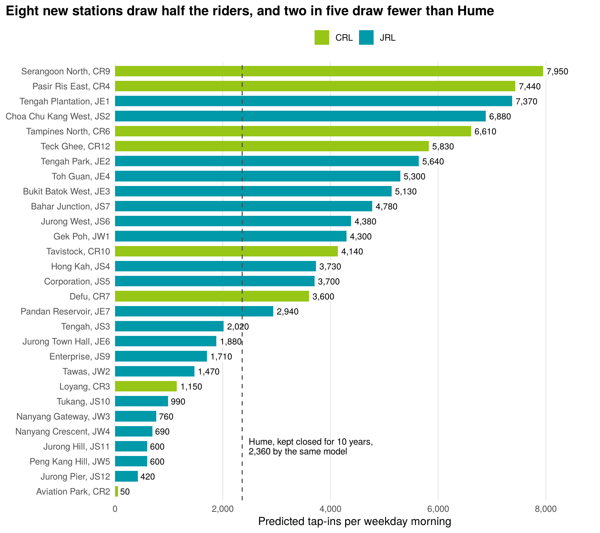
new_res <- result %>% st_drop_geometry() %>% filter(line %in% c("JRL", "CRL"), is.na(pred_now))
hume_pred <- result$pred_now[result$PT_CODE == "DT4"]
ggplot(new_res, aes(pred_fut, fct_reorder(paste0(name, ", ", PT_CODE), pred_fut), fill = line)) +
geom_col(width = 0.7) +
annotate("text", x = hume_pred + 120, y = 4, hjust = 0, size = 3.4, lineheight = 0.9,
label = paste0("Hume, kept closed for 10 years,\n", comma(round(hume_pred, -1)), " by the same model")) +
geom_label(aes(label = comma(round(pred_fut, -1))), hjust = -0.1, size = 3.3, fill = "white", label.size = 0,
label.padding = unit(0.1, "lines")) +
geom_vline(xintercept = hume_pred, linetype = "dashed", colour = "grey30") +
scale_fill_manual(values = line_cols, name = NULL) +
scale_x_continuous(labels = comma, expand = expansion(mult = c(0, 0.12))) +
labs(title = "Eight new stations draw half the riders, and two in five draw fewer than Hume",
x = "Predicted tap-ins per weekday morning", y = NULL) +
theme_minimal(base_size = 12) +
theme(plot.title = element_text(face = "bold"), plot.title.position = "plot", panel.grid.major.y = element_blank(),
panel.grid.minor = element_blank(), legend.position = "top")Eight stations in dense housing draw half the new riders, while two in five would be quieter than Hume. The busiest new station is Serangoon North, with about 7,950 tap-ins on a weekday morning, followed by Pasir Ris East and Tengah Plantation. All three sit among large blocks of flats that are more than a short walk from today’s stations. Together the 29 new stations draw about 102,100 morning tap-ins, 14.2% of the island’s total. The dashed line is Hume, which LTA kept closed for ten years for lack of riders. The model gives Hume about 2,360 tap-ins today. Both numbers come from the same model and share its blind spots, so the comparison is like for like. 12 new stations fall below the line, almost all in the Jurong industrial area, at NTU, at the edge of Tengah, or near Changi. The model counts only riders who start from home, so these stations will also serve workers and students, who the model does not see.
The model gives Hume more than twice the 1,000 riders who actually tap in there, so the yardstick itself is uncertain. The table tries three versions of it.
new stations below Hume, with three yardsticks
tibble(yardstick = c("Hume today, predicted by the model", "Hume once the new lines open, predicted by the model",
"Hume today, observed tap-ins"),
value = c(hume_pred, hume_fut, hume_obs)) %>%
mutate(below = map_int(value, ~ sum(new_res$pred_fut < .x)), value = fmt(value, -1)) %>%
kable(col.names = c("Yardstick", "Tap-ins per weekday morning", "New stations below it"))| Yardstick | Tap-ins per weekday morning | New stations below it |
|---|---|---|
| Hume today, predicted by the model | 2,360 | 12 |
| Hume once the new lines open, predicted by the model | 1,380 | 8 |
| Hume today, observed tap-ins | 1,000 | 7 |
7 stations are below Hume on every yardstick. They are Tukang, Jurong Hill, Jurong Pier, Nanyang Gateway, Nanyang Crescent, Peng Kang Hill and Aviation Park, all on the NTU branch, in the Jurong industrial area or at Changi. The count rises to 12 with the first yardstick. The extra stations, such as Jurong Town Hall and Tengah, sit close to the line, so their case is less clear. For all of them the decision to open should rest on worker and student numbers, which the model leaves out.
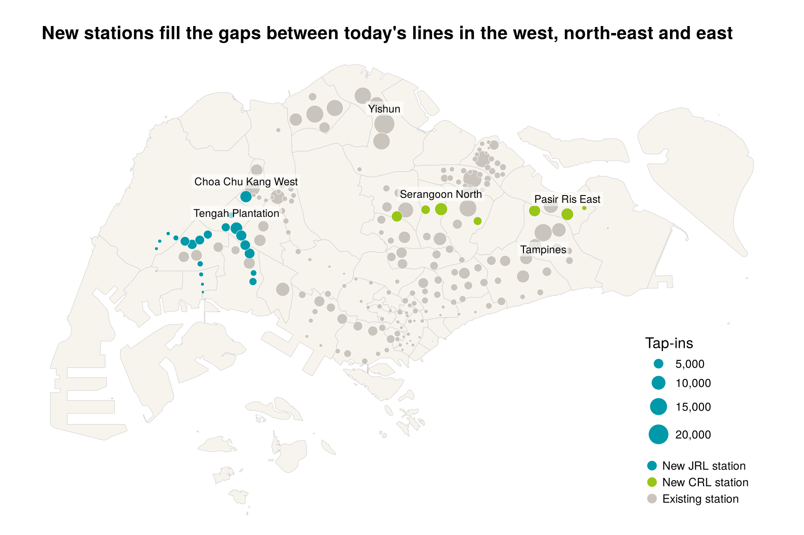
map_new <- result %>%
mutate(group = factor(case_when(!is.na(pred_now) ~ "Existing station", TRUE ~ paste("New", line, "station")),
levels = c("New JRL station", "New CRL station", "Existing station"))) %>%
arrange(desc(group), desc(pred_fut))
base_map +
tm_shape(map_new) +
tm_bubbles(size = "pred_fut", fill = "group", col = "white", lwd = 0.4,
size.scale = tm_scale_continuous(values.scale = 1.4),
fill.scale = tm_scale_categorical(values = c(unname(line_cols["JRL"]), unname(line_cols["CRL"]), "#C9C4BC")),
size.legend = tm_legend(title = "Tap-ins", position = tm_pos_in("right", "bottom"), frame = FALSE),
fill.legend = tm_legend(title = "", position = tm_pos_in("right", "bottom"), frame = FALSE)) +
tm_shape(filter(map_new, PT_CODE %in% c(slice_max(new_res, pred_fut, n = 4)$PT_CODE, "NS13"))) +
tm_text("name", size = 0.65, ymod = 1.2, bgcol = "white", bgcol_alpha = 0.6) +
tm_shape(filter(map_new, PT_CODE == "EW2/DT32")) +
tm_text("name", size = 0.65, ymod = -1.3, bgcol = "white", bgcol_alpha = 0.6) +
tm_layout(frame = FALSE) +
tm_title("New stations fill the gaps between today's lines in the west, north-east and east", size = 1.1, fontface = "bold")The new stations are busiest where housing is far from today’s lines. On the JRL, the strongest stations are in Tengah and Choa Chu Kang West, followed by Toh Guan and Bukit Batok West between Jurong East and Bukit Batok, and the stations in the middle of Jurong West, where many blocks are more than a kilometre from the East-West Line. The stations on the NTU branch and in the Jurong industrial area toward Jurong Pier are much smaller, because few people live there. On the CRL, the strong stations are between Ang Mo Kio and Hougang, at Teck Ghee, Serangoon North and Tavistock, and in the north of Tampines and Pasir Ris. Aviation Park and Loyang, near Changi, serve mostly workplaces and get few morning riders from homes. On the same scale, the busiest new station is about 51% of Tampines and 38% of Yishun once the new lines open.
Step 3. The impact on existing stations
The change at each existing station is its predicted tap-ins with the new stations minus its predicted tap-ins today. Both come from the model, so the comparison is fair even where the model does not match the observed count well.
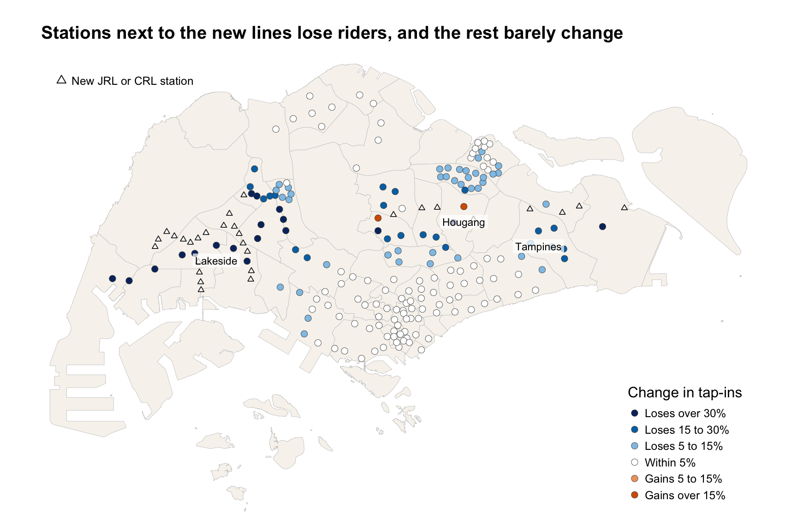
imp <- result %>% filter(!is.na(pred_now))
chg_lab <- c("Loses over 30%", "Loses 15 to 30%", "Loses 5 to 15%", "Within 5%", "Gains 5 to 15%", "Gains over 15%")
chg_col <- c("#08306B", col_low, "#8FC4E8", "#FFFFFF", "#F1A26B", col_high)
imp_map <- imp %>% filter(pred_now > 0) %>%
mutate(chg_class = cut(change_pct, c(-Inf, -0.3, -0.15, -0.05, 0.05, 0.15, Inf), labels = chg_lab)) %>%
arrange(desc(abs(change_pct)))
base_map +
tm_shape(filter(result, is.na(pred_now))) +
tm_symbols(shape = 24, size = 0.3, fill = "white", col = "grey10", lwd = 0.8) +
tm_add_legend(type = "symbols", labels = "New JRL or CRL station", shape = 24, fill = "white", col = "grey10", size = 0.5,
position = tm_pos_in("left", "top"), frame = FALSE) +
tm_shape(imp_map) +
tm_symbols(shape = 21, fill = "chg_class", size = 0.45, col = "grey30", lwd = 0.4,
fill.scale = tm_scale_categorical(values = setNames(chg_col, chg_lab), levels.drop = FALSE),
fill.legend = tm_legend(title = "Change in tap-ins", position = tm_pos_in("right", "bottom"), frame = FALSE)) +
tm_shape(filter(imp_map, PT_CODE %in% c("EW26", "EW2/DT32", "NE14"))) +
tm_text("name", size = 0.65, ymod = -1.2, bgcol = "white", bgcol_alpha = 0.7) +
tm_layout(frame = FALSE) +
tm_title("Stations next to the new lines lose riders, and the rest barely change", size = 1.1, fontface = "bold")The effect stays near the new lines. 101 of the 182 existing stations with predicted riders change by less than 5%, including almost every station in the north, the centre and along the east coast. 38 stations lose more than 15%. In the west they include the East-West Line from Jurong East to Tuas Crescent, Bukit Batok, Bukit Gombak, Choa Chu Kang and Yew Tee, the Bukit Panjang LRT, and the Downtown Line from Bukit Panjang to King Albert Park. In the north they include the stations near the CRL’s west end at Bright Hill, such as Upper Thomson, Mayflower, Lentor, Yio Chu Kang and Marymount, and those along its middle, such as Kovan, Serangoon, Buangkok, Lorong Chuan and Bishan. In the east they include Tampines, Tampines East, Expo, Upper Changi and Changi Airport. Changi Airport, Joo Koon, Gul Circle and Tuas Crescent lose more than half, but from a small base of under 3,000 predicted riders. Of the 7 interchanges that gain a line, 2 gain more than 5%, led by Hougang, and Ang Mo Kio holds about steady. Jurong East, Boon Lay, Choa Chu Kang and Pasir Ris still lose riders overall, because new stations nearby take their outer blocks.
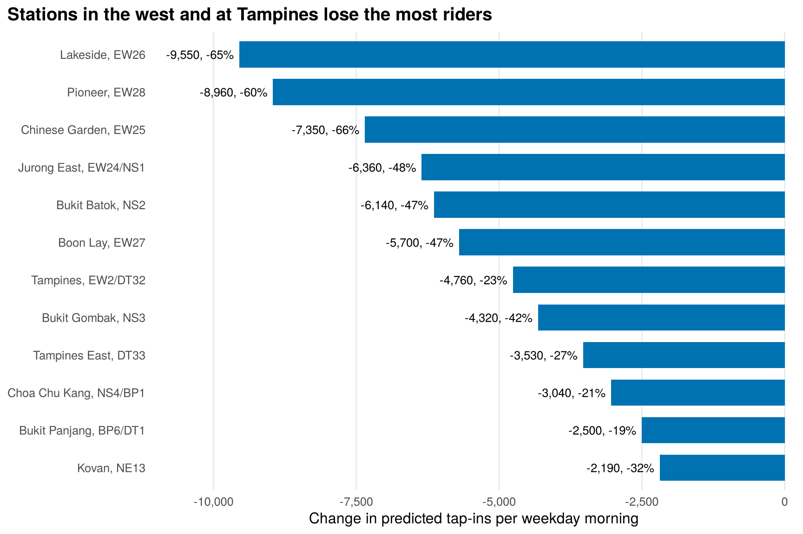
losers %>%
mutate(lab = paste0(name, ", ", PT_CODE),
txt = paste0(comma(round(change, -1)), ", ", percent(change_pct, 1))) %>%
ggplot(aes(change, fct_reorder(lab, -change))) +
geom_col(fill = col_low, width = 0.7) +
geom_text(aes(label = txt), hjust = 1.08, size = 3.4) +
scale_x_continuous(labels = comma, expand = expansion(mult = c(0.16, 0.02))) +
labs(title = "Stations in the west and at Tampines lose the most riders",
x = "Change in predicted tap-ins per weekday morning", y = NULL) +
theme_minimal(base_size = 12) +
theme(plot.title = element_text(face = "bold"), plot.title.position = "plot", panel.grid.major.y = element_blank(), panel.grid.minor = element_blank())The biggest losses in number are on the East-West Line through Jurong. Lakeside loses about 9,550 tap-ins, 65% of its predicted morning riders, followed by Pioneer and Chinese Garden. The JRL runs parallel to this stretch, a little to the north, through the middle of Jurong West, so many blocks end up closer to a JRL station. These figures are likely too high. The model picks a station by distance and pull only, and it does not know that riders heading to the city may prefer to stay on the East-West Line rather than change trains. Tampines is the largest loss on the CRL side.
Step 4. How the market areas change
A block’s market area is the station it is most likely to use. Comparing the most likely station before and after shows which blocks switch.
most likely station for each block, before and after
P_now <- huff_prob(bp, D_now, dest_now, max_km = max_km)
P_fut <- huff_prob(bp, D_fut, dest_fut, max_km = max_km)
origins <- origins %>%
mutate(stn_now = dest_now$PT_CODE[max.col(P_now, ties.method = "first")],
stn_fut = dest_fut$PT_CODE[max.col(P_fut, ties.method = "first")],
switch_to = case_when(stn_fut %in% dest_new$PT_CODE ~ dest_new$line[match(stn_fut, dest_new$PT_CODE)],
stn_fut != stn_now ~ "Another existing station",
TRUE ~ "No change"))
origins %>% st_drop_geometry() %>% count(switch_to, wt = flats, name = "flats") %>%
mutate(share = percent(flats / sum(flats), 0.1)) %>%
kable(format.args = list(big.mark = ","), col.names = c("Most likely station after", "Flats", "Share"))| Most likely station after | Flats | Share |
|---|---|---|
| Another existing station | 19,649 | 1.7% |
| CRL | 52,610 | 4.5% |
| JRL | 91,713 | 7.8% |
| No change | 1,015,184 | 86.1% |
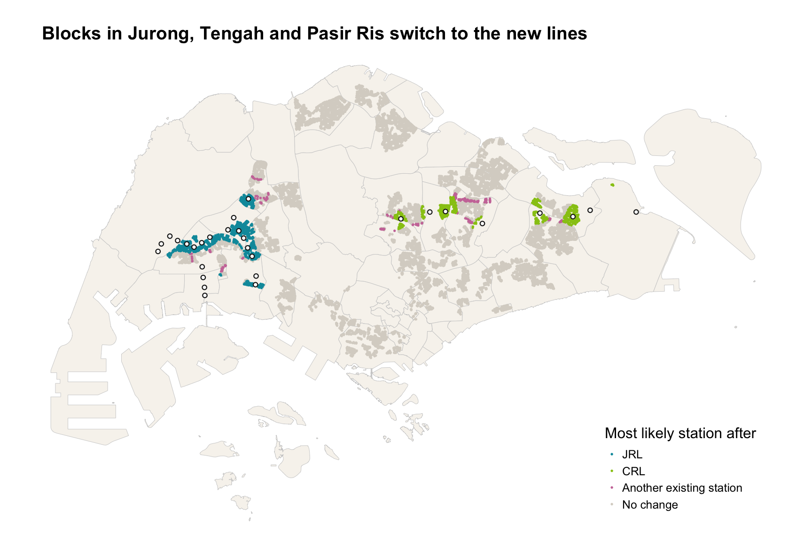
sw_cols <- c(line_cols, `Another existing station` = "#CC79A7", `No change` = "#D9D4CB")
base_map +
tm_shape(mutate(origins, switch_to = factor(switch_to, levels = names(sw_cols))) %>% arrange(desc(switch_to))) +
tm_dots(fill = "switch_to", size = 0.1,
fill.scale = tm_scale_categorical(values = sw_cols),
fill.legend = tm_legend(title = "Most likely station after", position = tm_pos_in("right", "bottom"), frame = FALSE)) +
tm_shape(filter(result, is.na(pred_now))) + tm_symbols(shape = 21, size = 0.3, fill = "white", col = "grey10") +
tm_layout(frame = FALSE) +
tm_title("Blocks in Jurong, Tengah and Pasir Ris switch to the new lines", size = 1.1, fontface = "bold")About 12% of HDB flats get a new most likely station on the JRL or CRL. These blocks form tight patches around the new stations, 8% on the JRL and 4% on the CRL. The towns with the most switching flats are Jurong West, Jurong East, Tengah, Pasir Ris, Bukit Batok and Choa Chu Kang. Another 1.7% switch to a different existing station, mostly to an interchange that gains a line, above all Hougang. Most of the island, in pale grey, keeps its current station, which matches the small changes in the impact map. The white circles are the new stations. Some, in the industrial west and near Changi, have almost no blocks around them.
To show how a single market area shrinks, the chance that each block uses Lakeside, the biggest loser on the JRL side, and Tampines, the biggest on the CRL side, is mapped before and after.
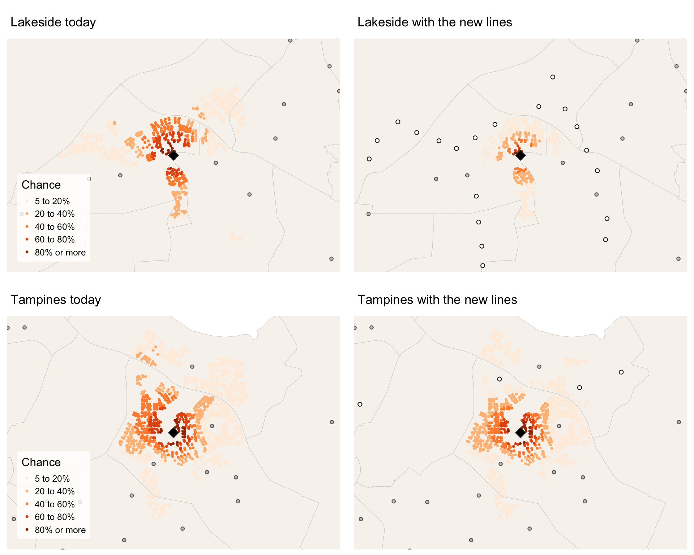
market_map <- function(code, when, P, dest, box) {
o <- origins %>% mutate(p = P[, match(code, dest$PT_CODE)]) %>% filter(p >= 0.05) %>% arrange(p)
s <- dest %>% filter(PT_CODE == code)
m <- tm_shape(sg_pa, bbox = box) + tm_polygons(fill = "#F7F4EE", col = "grey80", lwd = 0.4) +
tm_shape(o) + tm_dots(fill = "p", size = 0.18,
fill.scale = tm_scale_intervals(style = "fixed", breaks = c(0.05, 0.2, 0.4, 0.6, 0.8, 1),
labels = c("5 to 20%", "20 to 40%", "40 to 60%", "60 to 80%", "80% or more"),
values = "brewer.oranges"),
fill.legend = tm_legend(title = "Chance", position = tm_pos_in("left", "bottom"),
frame = FALSE, bg.color = "white", bg.alpha = 0.8)) +
tm_shape(filter(dest_now, PT_CODE != code)) + tm_symbols(shape = 21, size = 0.3, fill = "#C9C4BC", col = "grey40")
if (when == "with the new lines") m <- m +
tm_shape(filter(result, is.na(pred_now))) + tm_symbols(shape = 21, size = 0.35, fill = "white", col = "grey10")
m + tm_shape(s) + tm_symbols(shape = 23, size = 0.7, fill = "black") +
tm_layout(frame = FALSE, legend.show = (when == "today")) +
tm_title(paste(s$name, when), size = 1)
}
box_a <- st_bbox(st_buffer(filter(dest_now, PT_CODE == "EW26"), 3500))
box_b <- st_bbox(st_buffer(filter(dest_now, PT_CODE == "EW2/DT32"), 3500))
tmap_arrange(market_map("EW26", "today", P_now, dest_now, box_a), market_map("EW26", "with the new lines", P_fut, dest_fut, box_a),
market_map("EW2/DT32", "today", P_now, dest_now, box_b), market_map("EW2/DT32", "with the new lines", P_fut, dest_fut, box_b),
ncol = 2)Market areas shrink on the side that faces a new station. Today Lakeside, the black diamond, draws blocks on both sides of the East-West Line, and its strongest pull, the darkest dots, reaches well into Jurong West to the north. With the JRL, the white circles, a row of new stations runs through those northern blocks. Lakeside keeps a high chance only for the blocks right next to it. The estate to its south, which has no JRL station nearby, still uses Lakeside most, but with about half the chance. Tampines today draws most of the town around it. With the CRL, Tampines North takes the blocks in the north of the town, while the dense blocks next to the station stay with it. In both cases the market area is cut on one side, not all round, because the new line passes along one edge of the existing catchment.
Bonus. Does the Shape of Distance Decay Change the Answer?
Short answer
An exponential decay curve fits a little worse, with an R² of 0.81 against 0.84. It ranks the new stations almost the same, with a rank correlation of 0.99, and gives a similar total, 100,000 against 102,100 tap-ins, but single stations can differ by up to 52%.
Why this question, and why this method
The Huff model in Task 2 uses a power curve, d−λ, which is MCI’s default and the form in Lesson 8. A power curve falls very fast over the first few hundred metres and then flattens out. So it keeps a small pull from stations several kilometres away. An exponential curve, e−λd, falls at the same rate per km all the way out, so far stations lose their pull much faster. Fotheringham and O’Kelly, 1989, note that the exponential form often suits short trips within a city, and the power form longer trips between cities. A trip from home to a station is short, so the exponential form might fit better.
If the two forms predict similar numbers for the new stations, the predictions do not hinge on this choice. If they differ, the report should say which to trust.
Step 1. Fitting the exponential model
The same calibrate() function is used, with form = "exp". Only the decay curve changes. The data, the attractiveness measures and the target stay the same.
calibrate with exponential decay
fit_exp <- calibrate(c("lambda", "a_lines", "a_bus", "a_lrt"), form = "exp")
bind_rows(
tibble(decay = "Power, d<sup>−λ</sup>", lambda = bp["lambda"], a_lines = bp["a_lines"], a_bus = bp["a_bus"],
a_lrt = bp["a_lrt"], r2 = best$r2, sse = best$sse),
tibble(decay = "Exponential, e<sup>−λd</sup>", lambda = fit_exp$par["lambda"], a_lines = fit_exp$par["a_lines"],
a_bus = fit_exp$par["a_bus"], a_lrt = fit_exp$par["a_lrt"], r2 = fit_exp$r2, sse = fit_exp$sse)
) %>% kable(digits = c(0, 2, 2, 2, 2, 3, 5), escape = FALSE,
col.names = c("Decay", nocase("λ"), nocase("α lines"), nocase("α bus stops"), nocase("α LRT"), "R²", "Sum of squared differences"))| Decay | λ | α lines | α bus stops | α LRT | R² | Sum of squared differences |
|---|---|---|---|---|---|---|
| Power, d−λ | 2.05 | 0.97 | 0.11 | -2.12 | 0.835 | 0.00127 |
| Exponential, e−λd | 1.43 | 0.80 | 0.21 | -1.62 | 0.813 | 0.00147 |
predict with exponential decay
bx <- fit_exp$par
result$pred_exp <- huff_share(bx, D_fut, dest_fut, "exp", max_km) * total
pred_now_exp <- huff_share(bx, D_now, dest_now, "exp", max_km) * total
result$change_exp <- result$pred_exp - pred_now_exp[match(result$PT_CODE, dest_now$PT_CODE)]The exponential curve fits a little worse, and its weights tell the same story. Its λ of 1.43 means a station’s pull halves about every 490 m. The LRT weight stays strongly negative and the lines weight stays positive, so the station features keep their meaning. The bus stop weight is less stable, 0.11 under the power curve and 0.21 here, so it should not be read too closely. The exponential form did not fit better, as the reasoning above suggested it might. A likely reason is the 5 km limit, which already removes the far stations whose pull the exponential curve was expected to cut.
Step 2. Comparing the two sets of predictions
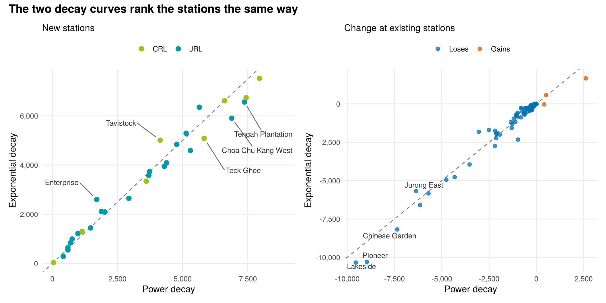
nb <- result %>% st_drop_geometry() %>% filter(is.na(pred_now))
eb <- result %>% st_drop_geometry() %>% filter(!is.na(pred_now))
lab_nb <- nb %>% slice_max(abs(pred_exp - pred_fut), n = 5) %>%
mutate(nx = if_else(pred_exp > pred_fut, -1500, 1500), ny = if_else(pred_exp > pred_fut, 700, -1300))
p1 <- ggplot(nb, aes(pred_fut, pred_exp, colour = line)) +
geom_abline(linetype = "dashed", colour = "grey50") + geom_point(size = 2.6) +
geom_text_repel(data = lab_nb, aes(label = name), colour = "grey20", size = 3.4, seed = 1, min.segment.length = 0,
nudge_x = lab_nb$nx, nudge_y = lab_nb$ny, segment.colour = "grey40", point.padding = 0.4) +
scale_colour_manual(values = line_cols, name = NULL) +
scale_x_continuous(labels = comma) + scale_y_continuous(labels = comma) +
labs(subtitle = "New stations", x = "Power decay", y = "Exponential decay") +
theme_minimal(base_size = 12) + theme(legend.position = "top", panel.grid.minor = element_blank())
lab_eb <- eb %>% slice_max(abs(change_exp - change) + abs(change), n = 4)
p2 <- ggplot(eb, aes(change, change_exp)) +
geom_abline(linetype = "dashed", colour = "grey50") +
geom_point(aes(colour = change > 0), alpha = 0.75, size = 2) +
geom_text_repel(data = lab_eb, aes(label = name), colour = "grey20", size = 3.4, seed = 1) +
scale_colour_manual(values = c(`TRUE` = col_high, `FALSE` = col_low), labels = c("Loses", "Gains"), name = NULL) +
scale_x_continuous(labels = comma) + scale_y_continuous(labels = comma) +
labs(subtitle = "Change at existing stations", x = "Power decay", y = "Exponential decay") +
theme_minimal(base_size = 12) + theme(legend.position = "top", panel.grid.minor = element_blank())
(p1 | p2) + plot_annotation(title = "The two decay curves rank the stations the same way",
theme = theme(plot.title = element_text(face = "bold", size = 15)))The ranking holds, but the size of the numbers depends on the curve. The rank correlation between the two sets of new-station predictions is 0.99, and for the change at existing stations it is 0.98. So both curves agree on which new stations will be busiest and which existing stations lose most. The totals are close, 102,100 tap-ins at the new stations under the power curve and 100,000 under the exponential curve. Single stations differ more. Among new stations with over 1,000 riders, Enterprise gets 52% more under the exponential curve, and Choa Chu Kang West gets 14% fewer. Against Hume measured by the same curve, 9 new stations fall below it, compared with 12 under the power curve. Planners should treat the station ranking as solid, and each station’s number as a range between the two curves. The power curve fits today’s tap-ins better, so it stays the main model.
Assumptions and limitations of the bonus
| Assumption | Why it may not hold | Effect |
|---|---|---|
| One decay curve fits the whole island | People in towns with feeder buses may travel further to a station | The curve is an island-wide average |
| The two curves are the only options | Other forms, such as a power curve with a cut-off distance, could fit better | The range between the two is a guide, not a bound |
| Fit to today’s stations carries over to new ones | New stations have no history | The same holds for both curves, so the comparison is still fair |
Analytical Assumptions and Methodological Decisions
The main decisions are gathered here, with the reason for each and how much it matters.
| Decision or assumption | Why | How it was tested or what it changes |
|---|---|---|
Fit the model to station totals with optim(), not with mci.fit() |
Only station-to-station trips are published, so no block’s own station shares are known | A λ grid and two restarts reach the same answer |
| Power distance decay, d−λ | The form in Lesson 8 and MCI’s default | The bonus refits with exponential decay. The ranking holds |
| Each block considers stations within 5 km, and always its nearest | Without a limit, far stations lose riders to lines nowhere near them | Limits of 3 and 8 km and no limit are compared in Task 3 |
| Distances have a floor of 100 m | d−λ explodes as the distance nears zero | Affects the 189 blocks that sit within 100 m of a station |
| Origins are HDB blocks, sized by flats | Flats are the only open, island-wide count of homes. Each flat stands for one household | Private housing and workers are left out. See the residual map |
| Total morning riders stay at today’s level | The model shares out riders. It cannot create new ones | New stations’ numbers are probably on the low side, because bus riders who would switch to rail are not added |
| An interchange that gains a new line gets one more line and keeps its point | The new and old points are within a short walk | The extra line raises the pull of these 7 stations. It is the reason Hougang and Bright Hill gain riders |
| New stations get today’s bus stops within 400 m and one line | Future bus routes are not published | Bus stops add little to the fit, so the effect is small |
| Weekday mornings, 6am to 9am, August and September 2026 | Morning trips mostly start at home, and the station codes are stable in these months | July is left out, and the two months are averaged |
Integrated Findings and Discussion
Each part of the analysis answers a different question. The findings that several parts agree on are the most reliable.
| Finding | Evidence | How sure |
|---|---|---|
| The new stations fill gaps in housing that is far from today’s lines | The busiest new stations, Serangoon North, Pasir Ris East and Tengah Plantation, sit in dense HDB areas. 12% of HDB flats get a new most likely station | Sure. Both decay curves rank the stations almost the same |
| A handful of new stations carry a large share of the riders | The top 5 draw 36% of the new stations’ riders, and the top 8 about half. 7 stations draw under 1,000, all in industrial areas, the NTU campus or near Changi | Sure for the ranking, less sure for the small stations, whose riders are mostly workers and students |
| Between a quarter and two in five new stations would be quieter than Hume | 7 to 12 stations are below Hume, depending on how Hume is measured, mostly in industrial areas, at NTU and near Changi | Sure for the 7 that are below on every yardstick, less sure for the rest. These stations serve workers and students, whom the model does not count |
| The impact on existing stations is local | 101 of 182 existing stations with predicted riders change by less than 5%. Stations more than 5 km from any new station barely change | Fairly sure. With limits of 3 to 8 km, 35 to 42 stations lose over 15%, and far stations change little |
| The East-West Line through Jurong gives up the most riders | Jurong East to Tuas Link loses about 39,100 tap-ins, 38% of everything the new stations draw | Direction sure, size probably too high, because the model ignores where riders are going |
| Two CRL interchanges gain, while all three JRL interchanges lose | Hougang and Bright Hill gain riders, and Ang Mo Kio holds steady. Pasir Ris, Jurong East, Boon Lay and Choa Chu Kang lose them | Moderately sure. It depends on how the new line’s stations are spaced around each interchange |
Three points stand out when the parts are read together.
- The two lines do different jobs. The JRL mainly serves Tengah and the middle of Jurong West, where today’s nearest station is often more than a kilometre away. The CRL mainly serves the gaps between today’s lines in Ang Mo Kio, Serangoon North, Hougang and north Tampines.
- New stations take riders from their neighbours, not from the whole network. Because total morning demand is held fixed, every rider at a new station is a rider who used to board somewhere nearby. The losses are concentrated where the new line runs close and parallel to an old one, which in this case means the East-West Line through Jurong.
- Where a new line meets an old one matters. At Hougang and Bright Hill, the CRL adds a line without putting a new station close by, so the interchange gains riders, and Ang Mo Kio holds steady. At Jurong East, Boon Lay, Choa Chu Kang and Pasir Ris, new stations sit in the interchange’s own catchment and take its outer blocks.
Geovisualisation and Geocommunication
The figures follow the colour and design guides in the ISSS608 Lesson 2 notes, Designing Graphs to Enlighten, Kam, 2026a, which draw on Few, 2012.
| Design choice | Guide it follows |
|---|---|
| Every title states the finding, and the short reading below each figure starts with it | A chart needs a well-worded title that tells the reader what to see |
| Blue means fewer riders or under-prediction, warm means more, and white means close to zero change | Use different colours only for differences in meaning |
| Counts such as flats and the chance of using a station use one orange scale from pale to dark | For a range of values, use one hue and go from pale for low to dark for high |
| The two new lines keep LTA’s own line colours, teal for the JRL and lime for the CRL, and existing stations are grey | Use soft colours for most data and a strong one for what needs attention |
| Existing and new stations share one size scale | The same quantity must look the same everywhere, so sizes can be compared |
| The market area maps show the same station today and with the new lines, side by side, on the same extent | Small multiples make a change easy to see |
| No figure pairs red with green | Colour-blind readers can tell all groups apart |
Rail Planning Implications
The brief frames the question around stations that are built but not yet worth opening. The table links each finding to an action that LTA or the operators could consider, and to what they should check first. The model counts only morning trips from HDB homes, so each row is a starting point for planning, not a forecast to build on directly.
| Finding | Possible action | Check first |
|---|---|---|
| Serangoon North, Pasir Ris East and Tengah Plantation draw the most morning riders among the new stations | Plan entrances, fare gates and feeder bus links there for the largest crowds, and open the JRL stages that include them first if staging allows | Tengah’s population once all its flats are built, since the model only sees completed blocks |
| 7 to 12 new stations draw fewer home-based riders than Hume, which stayed closed for ten years | Treat them as candidates for building the shell now and choosing the opening date later, as was done with Hume, Buangkok and Woodleigh. Their opening case depends on worker and student demand | Worker, student and airport staff numbers from JTC, NTU and Changi Airport Group, and LTA’s own counts of morning tap-outs at nearby stations such as Pioneer and Tuas |
| Buangkok, once a closed station, now has 10,600 morning tap-ins | Expect quiet stations near new housing, such as Tengah, to grow as flats are completed | HDB’s completion schedule for Tengah |
| The East-West Line through Jurong loses many morning boardings to the JRL | Use the expected relief on this crowded stretch when planning train frequencies and the timing of any further capacity work | Whether riders bound for the city will really change at Jurong East or Boon Lay, using the JRL’s own origin-destination data once it opens |
| About 12% of HDB flats get a new most likely station, most of them in Jurong, Tengah and Pasir Ris | Re-route feeder buses in these towns so they also serve the new stations | The current feeder routes and their loads |
| Hougang and Bright Hill gain riders as CRL interchanges, Hougang by about 21% | Check interchange capacity at these stations and at Ang Mo Kio, especially at Hougang, which gains the most | Transfer walking routes and platform space at each interchange |
Limitations
| Limitation | Effect on the results | How it was handled |
|---|---|---|
| Only HDB residents are origins | Stations near private housing, workplaces, schools and workers’ dormitories are under-predicted | Shown in the residual map and named in the readings |
| Total morning demand is held fixed | People who take the bus today and would switch to the new lines are not counted, so new-station ridership is probably on the low side | Stated in Task 3. Results read as a share of today’s riders |
| Distance is a straight line | Rivers, expressways and the actual walking or bus route are ignored | The 5 km limit removes the most unrealistic choices |
| The model picks a station by distance and pull only | It does not know where riders are going, so a rider bound for the city who would stay on the East-West Line is treated like any other | Losses on the East-West Line through Jurong are flagged as probably too high |
| Future attractiveness is today’s | New stations get today’s bus stops and one line. New feeder routes will add pull | Bus stops add little to the fit, so the effect is small |
| The weights have no error bars | The fit gives one best value for each weight, not a range | The λ grid, the restarts, the 3 to 8 km limits and the exponential curve show how far the results move |
| Tengah is still being built | Its JRL stations will grow beyond the prediction | Stated in the readings |
| Forest Hill, JS2A, is left out | A 25th JRL station planned for the mid-2030s is not in the future station file | The 24 stations in the brief are used |
| Two months of data | August and September 2026 may not represent the whole year | July was dropped because station codes changed, and the two months are averaged |
Conclusion
Q1. HDB flats form a ring of towns around the centre, and morning tap-ins are highest at stations in the big towns, led by Yishun. Q2. A Huff model with lines, bus stops and an LRT flag, and a 5 km limit on station choice, explains 84% of the variation in tap-ins. The distance decay λ is 2.05. Q3. The 29 new stations draw about 102,100 weekday morning tap-ins, led by Serangoon North, Pasir Ris East and Tengah Plantation, while 7 to 12 are predicted to be quieter than Hume, depending on how Hume is measured. Q4. The riders come from nearby stations. 101 of 182 existing stations with predicted riders barely change, while the East-West Line through Jurong loses the most, and the CRL interchanges at Hougang and Bright Hill gain. Q5. An exponential distance decay ranks the stations almost the same, so the ranking is more reliable than any single station’s number.
Overall, the new lines move morning riders into the housing gaps between today’s lines, and the effect on the rest of the network stays local.
Future work
- Private housing as origins. Add condominiums and landed homes from URA private property data, so stations near private estates are not under-predicted.
- Real routes. Replace straight lines with walking and feeder bus travel times from OneMap routing.
- Where riders are going. Use the origin-destination data to model the choice between a new line and an old one by destination, which would correct the East-West Line losses.
- New riders. Add a second step that estimates how many bus riders switch to rail when a station opens nearby.
References
- Bahrami, M. et al. (2022). Using gravity model to make store closing decisions, a data driven approach. Expert Systems with Applications, 205, 117703.
- Bai, L. et al. (2023). Delineating hierarchical obstetric hospital service areas using the Huff model based on medical records. Applied Geography, 153, 102903.
- Few, S. (2012). Show Me the Numbers: Designing Tables and Graphs to Enlighten (2nd ed.). Analytics Press.
- Fotheringham, A. S. and O’Kelly, M. E. (1989). Spatial Interaction Models: Formulations and Applications. Kluwer Academic.
- Huff, D. L. (1963). A probabilistic analysis of shopping center trade areas. Land Economics, 39(1), 81 to 88.
- Kam, T. S. (2026a). ISSS608 Lesson 2, Designing Graphs to Enlighten. Singapore Management University.
- Kam, T. S. (2026b). R for Geospatial Data Science and Analytics. https://r4gdsa.netlify.app/
- Kam, T. S. (2026c). ISSS626 Lesson 8, Market Area Analysis for Retail and Service Locations, Huff and MCI Models. Singapore Management University.
- Land Transport Authority (2026). Factsheet: The Next Phase of Rail Development. https://www.lta.gov.sg/content/ltagov/en/newsroom/2026/3/news-releases/next-phase-of-rail-development.html
- Land Transport Authority. LTA DataMall. https://datamall.lta.gov.sg/
- Lin, T. G., Xia, J. C., Robinson, T. P., Olaru, D., Smith, B., Taplin, J. and Cao, B. (2016). Enhanced Huff model for estimating Park and Ride catchment areas in Perth, WA. Journal of Transport Geography, 54, 336 to 348.
- Nakanishi, M. and Cooper, L. G. (1974). Parameter estimation for a multiplicative competitive interaction model, least squares approach. Journal of Marketing Research, 11(3), 303 to 311.
- Singapore Land Authority. OneMap API. https://www.onemap.gov.sg/apidocs/
- Wieland, T. (2017). Market area analysis for retail and service locations with MCI. The R Journal, 9(1), 298 to 323.
- Wu, E. T. F. Singapore Train Station Coordinates. https://github.com/elliotwutingfeng/singapore_train_station_coordinates
- Zhu, Z. et al. (2021). Improved Huff model for estimating urban rail transit station catchment areas considering station choices. Journal of Advanced Transportation, 2021.
NoteAI use declaration
Claude by Anthropic was used to help write and debug the R code, format the charts and edit the wording of this report. The choice of questions and methods, the analysis and the conclusions are the author’s own, and every figure quoted was checked against the code output.